Why influence diagnostics?
CPUE standardisation attempts to distinguish changes in abundance from changes in fishing practice, location, season, vessel composition, and other explanatory variables. A fitted model may estimate these relationships well without making it obvious why the standardised index differs from the nominal series.
The coefficient-distribution-influence (CDI) framework combines the fitted effect of a term with changes in the sampled distribution of that term through the focus variable, which is usually year (Bentley et al. 2012). Spatial and spatiotemporal versions can similarly show whether changes in sampled location move observations among areas of different predicted abundance (Hsu et al. 2022).
influ2 represents these results with one model-neutral
S3 class. Each backend extracts model components and joint uncertainty,
while the calculation, storage, summary, and plotting layers remain
shared.
A synthetic lobster CPUE example
The main examples use the simulated lobsters_per_pot
data supplied with the package. They contain 5,049 pot records spanning
2000 to 2017, with uneven annual sample sizes and deliberate gaps in
year-month coverage. The response is the number of lobsters caught per
pot, and the explanatory variables are month, depth in metres, and soak
time in hours.
The simulation makes three changes in fishing practice visible. Sampling shifts around 2004–2005 from a March-centred season towards a September-centred season. The specified seasonal catch effect is higher in September. Fishing moves deeper during 2007–2011, into depths with lower expected catch in the simulation. From about 2012, longer soak times become more common and increase expected catch per pot. These changes overlap a known annual effect that fluctuates around a gradual decline.
This is a deliberately constructed teaching example. The seasonal,
depth, and soak-time relationships are specified to illustrate
confounding, not estimated relationships from a real lobster fishery.
Catch has negative-binomial variation, and every value comes from the
package’s fixed-seed simulator; no commercial fishing records are
included. The known annual effect is retained in the dataset’s
simulation attribute for the truth check following the
refitted step plot below.
library(influ2)
data(lobsters_per_pot)
dim(lobsters_per_pot)
#> [1] 5049 5
head(lobsters_per_pot)
#> lobsters year month depth soak
#> 1 3 2000 01 18.68397 25.09660
#> 2 1 2000 01 22.21965 47.60876
#> 3 3 2000 01 23.77189 22.54391
#> 4 1 2000 01 30.98419 22.42277
#> 5 2 2000 01 15.62055 24.73538
#> 6 1 2000 01 13.58122 23.45524The changing distribution of records by year and month is visible
before a model is fitted. Larger bubbles represent more pot records.
With no fill argument, plot_bubble() uses its
default purple palette.
plot_bubble(
df = lobsters_per_pot,
group = c("year", "month")
) +
labs(x = "Month", y = "Year")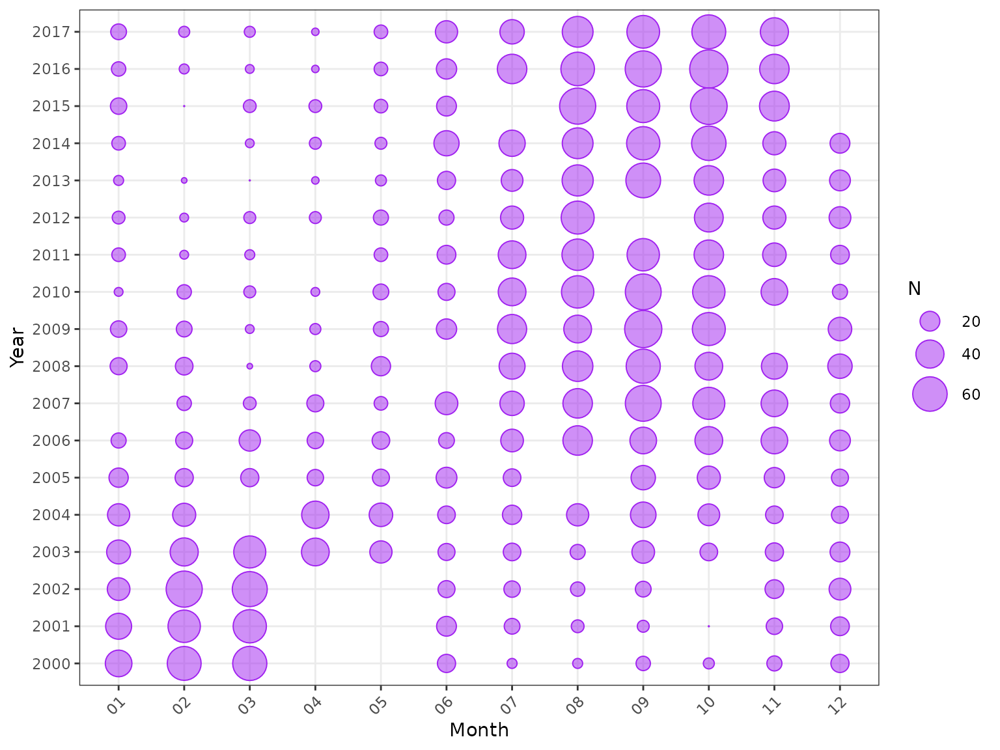
Sampling effort by year and month, using the default purple bubble style.
Mapping month to colour gives a second view of the same sampling pattern.
plot_bubble(
df = lobsters_per_pot,
group = c("year", "month"),
fill = "month"
) +
labs(x = "Month", y = "Year") +
theme(legend.position = "none")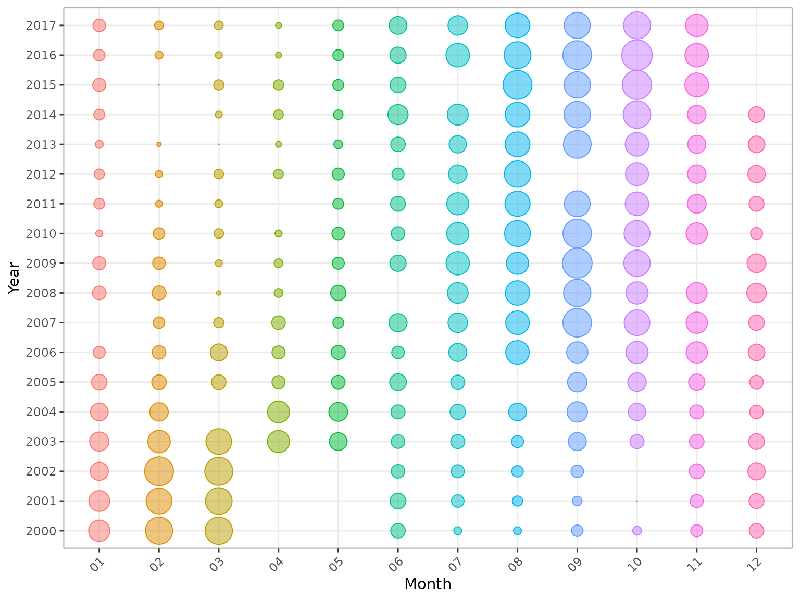
Sampling effort by year and month, with a rainbow palette distinguishing months.
Depth and soak-time coverage also change through time.
covariates <- tidyr::pivot_longer(
lobsters_per_pot,
cols = c("depth", "soak"),
names_to = "covariate",
values_to = "value"
)
ggplot(
covariates,
aes(x = year, y = value, group = year)
) +
geom_boxplot(outlier.alpha = 0.08, linewidth = 0.25) +
facet_wrap(~covariate, scales = "free_y", ncol = 1) +
scale_y_continuous(
limits = c(0, NA),
expand = expansion(mult = c(0, 0.05))
) +
labs(x = "Year", y = NULL) +
theme(axis.text.x = element_text(angle = 45, hjust = 1))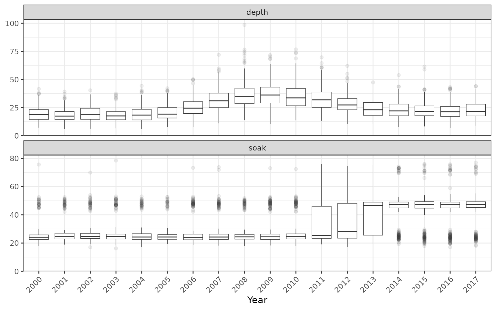
Observed depth and soak-time distributions by year.
GLM
A Poisson GLM provides a transparent starting point. This is an example model, not a recommendation that Poisson variation is adequate for these data.
lobster_glm <- glm(
lobsters ~ year + month + poly(depth, 3) + poly(soak, 3),
family = poisson(link = "log"),
data = lobsters_per_pot
)
glm_diagnostic <- influ(lobster_glm, focus = "year")
glm_diagnostic
#> <influ_diag>
#> Backend: glm
#> Response: single poisson (log)
#> Focus: year
#> Terms: 4
#> Focus levels:18
#> Uncertainty: analytic covariance
#> Retained: summary
summary(glm_diagnostic)
#> Influence diagnostic summary
#> Backend: glm
#> Family: single poisson (log)
#> Focus: year
#>
#> term component maximum_absolute_link_influence level_at_maximum
#> month conditional 0.4323325 2000
#> year conditional 0.3508885 2002
#> poly(depth, 3) conditional 0.2664725 2008
#> poly(soak, 3) conditional 0.2384326 2014The influence plot shows how changes in sampled month, depth, and soak time move the annual standardised series. The year term is retained in the object, but omitted from this plot because its within-year composition is the focus, not a sampling-distribution effect.
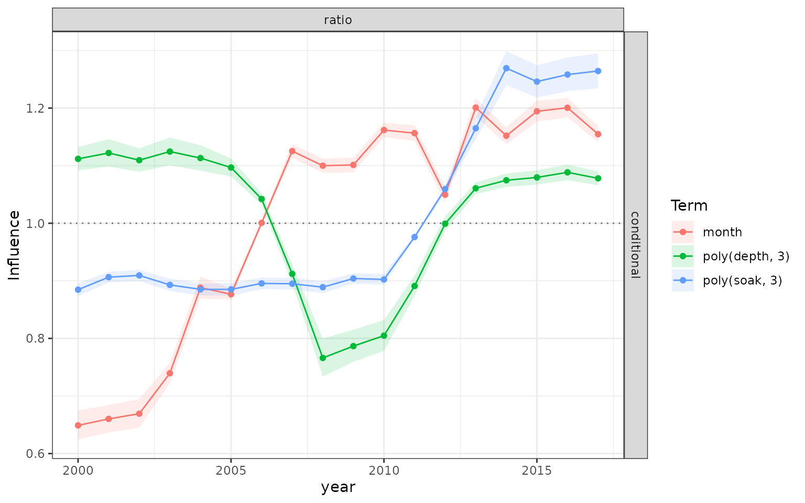
GLM influence ratios for the changing lobster covariate distributions.
The same object contains nominal and standardised indices. Here,
nominal means the observed annual arithmetic mean of
lobsters per pot, including zero catches, without adjusting for month,
depth, or soak time. Each pot record has equal weight in this example;
supplying weights to influ() instead gives a
weighted annual mean. The standardised index is the exponentiated,
centred year effect from the fitted log-link model. It is a relative
index, not an estimate in lobsters per pot, so the two series appear in
separate panels labelled response and ratio,
respectively.
plot(glm_diagnostic, type = "index")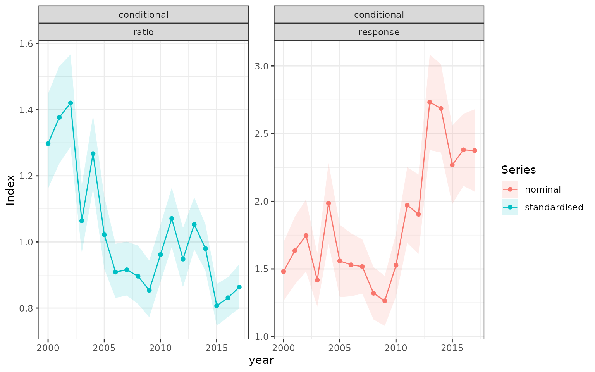
Observed annual mean lobsters per pot (nominal, response scale) and the relative Poisson-GLM-standardised index (ratio scale).
The model-neutral overall and trend metrics reproduce Bentley’s definitions. The overall metric is the mean absolute link-scale influence transformed back to a proportional scale. The trend metric is the fitted change per ordered focus level, also transformed to a proportional scale.
subset(
influ_metrics(glm_diagnostic),
term != "year",
select = c(term, metric, estimate)
)
#> term metric estimate
#> 3 month overall 0.200153750
#> 4 month trend 0.037814471
#> 5 poly(depth, 3) overall 0.116432819
#> 6 poly(depth, 3) trend -0.004176475
#> 7 poly(soak, 3) overall 0.140917166
#> 8 poly(soak, 3) trend 0.024185229Reading a CDI plot
A CDI plot aligns the fitted term effect above its observed distribution, with the resulting annual influence beside it. By default, the top panel centres the term on the same weighted reference distribution as the influence calculation. For this log-link model, it shows relative month effects on a logarithmic axis, with one as the reference. A value of 1.2 represents a 20% higher monthly contribution to expected catch than the reference, holding the other model components fixed. No month is singled out merely because it is the model’s first factor level.
The default reference uses the observations and any supplied
weights. Supplying reference_data and,
optionally, reference_weights changes both the influence
reference and the CDI centring to that explicit distribution. The
bubbles continue to show the observed sampling distribution.
# Centred relative month effects, with 95% confidence intervals.
plot(glm_diagnostic, type = "cdi", term = "month")
# The same centred effects in additive log units.
plot(
glm_diagnostic, type = "cdi", term = "month",
coefficient_scale = "link"
)
# Original model coding: log effects relative to month 1 for this GLM.
plot(
glm_diagnostic, type = "cdi", term = "month",
coefficient_reference = "model"
)The interval calculation includes uncertainty in the estimated centre
and its covariance with each term effect. The default interval covers
95%; set probs when calling influ() to choose
other bounds. The model-reference option changes only the top panel,
leaving the composition and influence panels unchanged.
The display scale follows the component’s link. Log-link and lognormal components use relative effects; identity-link components use additive effects. Logit, probit, and complementary-log-log components remain in their labelled link units, centred on zero. Their top panels are not catch multipliers or changes in encounter probability.
A common prediction-grid reference
Observed-data standardisation is the default. For comparisons among fleets, areas, or models, an explicit prediction grid prevents differences in their observed samples from silently changing the reference distribution. This grid crosses every year and month at common depth and soak values.
lobster_reference <- expand.grid(
year = levels(lobsters_per_pot$year),
month = levels(lobsters_per_pot$month),
depth = median(lobsters_per_pot$depth),
soak = median(lobsters_per_pot$soak)
)
lobster_reference$year <- factor(
lobster_reference$year,
levels = levels(lobsters_per_pot$year)
)
lobster_reference$month <- factor(
lobster_reference$month,
levels = levels(lobsters_per_pot$month)
)
glm_grid_diagnostic <- influ(
lobster_glm,
focus = "year",
reference_data = lobster_reference
)
glm_grid_diagnostic$metadata[c("reference", "n_reference")]
#> $reference
#> [1] "prediction_grid"
#>
#> $n_reference
#> [1] 216Reference weights can be supplied with
reference_weights. They may be a numeric vector or the name
of a column in reference_data. This makes the
standardisation estimand explicit, reproducible, and independent of
accidental sample imbalance.
GAM
The mgcv backend works with parametric terms and smooths
(Wood 2017).
Here, negative-binomial variation is combined with smooth depth and soak
effects.
lobster_gam <- mgcv::gam(
lobsters ~ year + month + s(depth, k = 5) + s(soak, k = 5),
family = mgcv::nb(),
method = "REML",
data = lobsters_per_pot
)
gam_diagnostic <- influ(lobster_gam, focus = "year")
summary(gam_diagnostic)
#> Influence diagnostic summary
#> Backend: gam
#> Family: single negative_binomial (log)
#> Focus: year
#>
#> term component maximum_absolute_link_influence level_at_maximum
#> month conditional 0.4318174 2000
#> year conditional 0.3573037 2002
#> s(depth) conditional 0.2447380 2008
#> s(soak) conditional 0.2368403 2014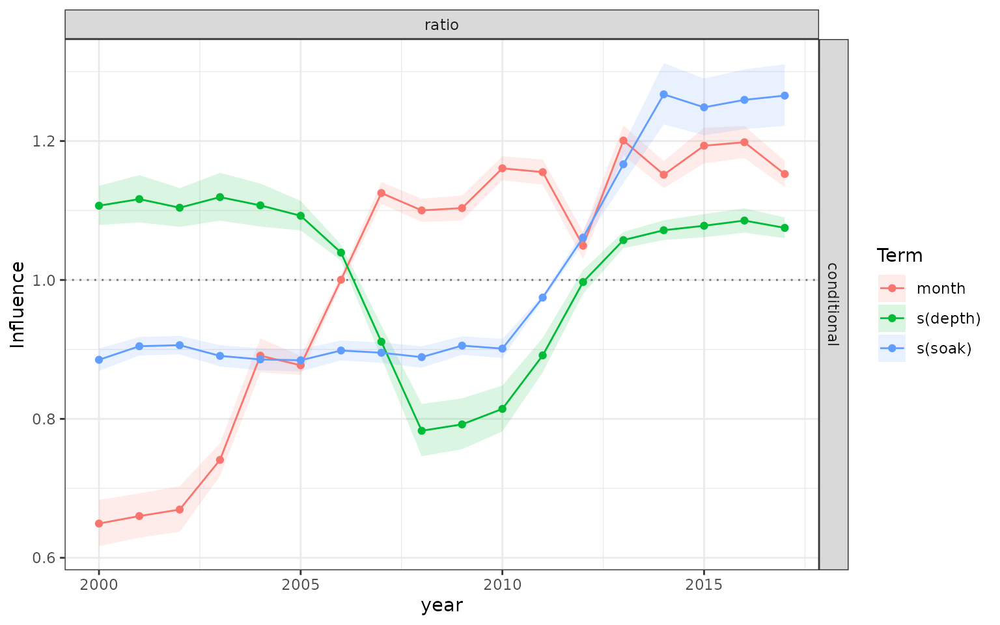
GAM influence ratios for month, depth, and soak time.
This is the same influ_diag interface as the GLM. No
plotting code needs to know that two of the terms are smooths.
glmmTMB
glmmTMB adds mixed effects, negative-binomial models,
hurdle models, and zero-inflation (Brooks et al. 2017). The example
treats month as a random intercept.
lobster_glmmTMB <- glmmTMB::glmmTMB(
lobsters ~ year + poly(depth, 2) + poly(soak, 2) + (1 | month),
family = glmmTMB::nbinom2(),
data = lobsters_per_pot
)
glmmTMB_diagnostic <- influ(lobster_glmmTMB, focus = "year")
summary(glmmTMB_diagnostic)
#> Influence diagnostic summary
#> Backend: glmmTMB
#> Family: single negative_binomial (log)
#> Focus: year
#>
#> term component maximum_absolute_link_influence level_at_maximum
#> random_effects random_effects 0.4208714 2000
#> year conditional 0.3507567 2002
#> poly(depth, 2) conditional 0.2498206 2008
#> poly(soak, 2) conditional 0.2345822 2014
plot(glmmTMB_diagnostic, type = "components")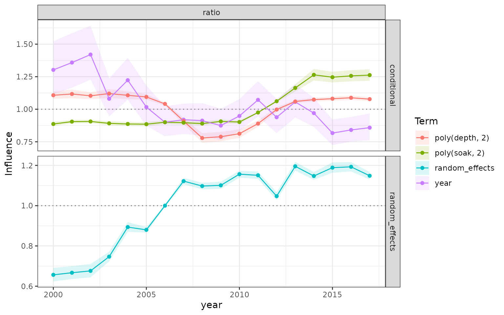
glmmTMB fixed- and random-effect influence ratios.
Fixed effects use the joint maximum-likelihood covariance. The month
random effect uses its fitted conditional modes, with uncertainty
propagated from their joint conditional latent covariance and labelled
separately. For hurdle and zero-inflated fits, influ() also
calculates population-level unconditional-mean influence using the joint
covariance of both components.
brms
The Bayesian backend uses genuine joint posterior draws, but projects each draw directly to the much smaller focus-by-term diagnostic. It never constructs an observation-by-draw-by-term array (Bürkner 2017). A model for the same lobster data can be fitted as follows:
lobster_brms <- brms::brm(
lobsters ~ year + (1 | month) + s(depth, k = 3) + soak,
family = brms::negbinomial(),
data = lobsters_per_pot,
chains = 4,
cores = 4,
iter = 5000,
warmup = 2000,
seed = 20260905,
control = list(adapt_delta = 0.99, max_treedepth = 12),
file = "fit2",
file_refit = "on_change"
)The vignette uses the fitted model shipped with its source, rather than running MCMC whenever the documentation is built.
lobster_brms <- readRDS(system.file(
"extdata", "brms-fixtures", "fit2.rds", package = "influ2"
))
brms_diagnostic <- influ(
lobster_brms,
focus = "year",
ndraws = 250,
retain = "summary"
)
summary(brms_diagnostic)
#> Influence diagnostic summary
#> Backend: brms
#> Family: single negative_binomial (log)
#> Focus: year
#>
#> term component maximum_absolute_link_influence
#> month conditional:group_level 0.4210921
#> year conditional 0.3513136
#> soak conditional 0.2420369
#> s(depth, k = 3) conditional:smooth 0.2378273
#> level_at_maximum
#> 2000
#> 2002
#> 2014
#> 2008
plot(brms_diagnostic, type = "components")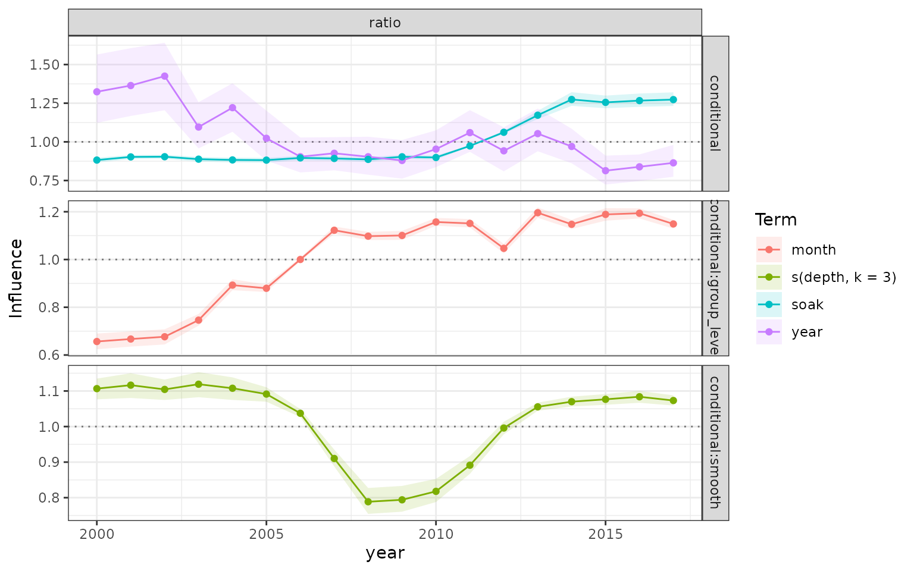
BRMS population-level year and soak-time, month group-level, and depth-smooth influence ratios.
Population-level, group-level, and smooth contributions all preserve
posterior dependence during calculation. The default object retains
interval summaries; retain = "derived_draws" retains only
the compact diagnostic draws. The soak-time term is included because
longer soak times are a known source of confounding in this simulation,
alongside seasonal and depth changes.
The same posterior diagnostic can be displayed as a complete Bayesian CDI plot. The top panel shows relative month effects centred on the observed monthly distribution; the lower panels align that distribution with the resulting yearly influence. Each joint posterior draw is centred before it is exponentiated. Points are posterior means of those relative effects, and bars are 95% credible intervals. This preserves dependence between each month and the estimated reference, without retaining the full posterior array in the diagnostic. The first month therefore has an estimated effect and an interval, just like every other month.
plot(
brms_diagnostic,
type = "cdi",
term = "month",
component = "conditional:group_level"
)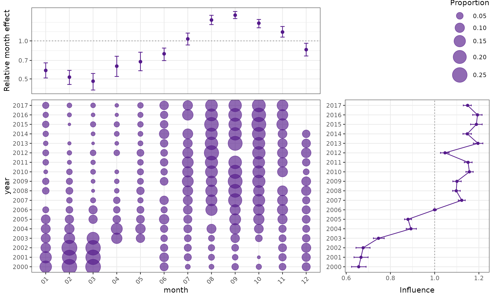
Bayesian CDI for the monthly group-level effect: centred relative month effects with 95% credible intervals (top left), observed monthly composition (bottom left), and annual influence (bottom right).
sdmTMB
The lobster data deliberately have no coordinates. Inventing
coordinates from depth or soak time would create a misleading spatial
example, so this example uses the Pacific cod data and mesh supplied by
sdmTMB (Anderson et al. 2025). Fixed,
spatial, and spatiotemporal contributions are returned in the same
schema as the lobster examples.
data("pcod_2011", package = "sdmTMB")
data("pcod_mesh_2011", package = "sdmTMB")
spatial_model <- sdmTMB::sdmTMB(
present ~ as.factor(year) + depth_scaled,
data = pcod_2011,
mesh = pcod_mesh_2011,
family = binomial(),
time = "year",
spatial = "on",
spatiotemporal = "iid",
silent = TRUE
)
sdmTMB_diagnostic <- influ(
spatial_model,
focus = "year",
ndraws = 100,
seed = 1
)
summary(sdmTMB_diagnostic)
#> Influence diagnostic summary
#> Backend: sdmTMB
#> Family: single binomial (logit)
#> Focus: year
#>
#> term component maximum_absolute_link_influence
#> as.factor(year) conditional 0.60757313
#> spatial_field conditional:latent_fields 0.10528749
#> depth_scaled conditional 0.05400688
#> spatiotemporal_field conditional:latent_fields 0.03084851
#> level_at_maximum
#> 2013
#> 2015
#> 2015
#> 2013
plot(sdmTMB_diagnostic, type = "components")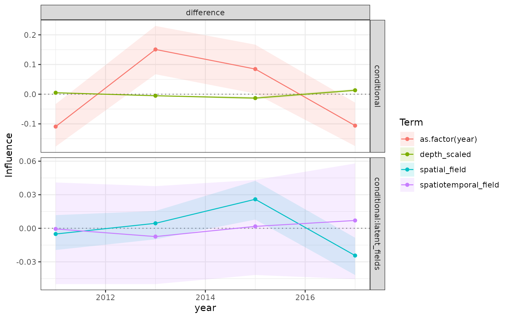
sdmTMB fixed, spatial, and spatiotemporal influence components.
tinyVAST
The tinyVAST example uses a small reproducible spatial
count data set. The purpose is to exercise the spatial and
spatiotemporal component interface, not to represent a complete survey
analysis (Thorson et
al. 2025).
set.seed(2)
n <- 120
spatial_counts <- data.frame(
x = runif(n),
ycoord = runif(n),
time = rep(1:4, each = n / 4)
)
spatial_counts$year <- factor(spatial_counts$time)
spatial_counts$var <- "catch"
spatial_counts$dist <- "poisson"
eta <- 0.3 + 0.08 * spatial_counts$time +
0.3 * sin(2 * pi * spatial_counts$x)
spatial_counts$catch <- rpois(n, exp(eta))
spatial_mesh <- fmesher::fm_mesh_2d(
spatial_counts[c("x", "ycoord")],
n = 25
)
tiny_model <- tinyVAST::tinyVAST(
catch ~ year,
data = spatial_counts,
family = list(poisson = poisson()),
spatial_domain = spatial_mesh,
spacetime_term = "",
space_columns = c("x", "ycoord")
)
tinyVAST_diagnostic <- influ(
tiny_model,
focus = "year",
ndraws = 100,
seed = 1
)
summary(tinyVAST_diagnostic)
#> Influence diagnostic summary
#> Backend: tinyVAST
#> Family: single poisson (log)
#> Focus: year
#>
#> term component maximum_absolute_link_influence
#> year conditional 0.2437404
#> spatiotemporal_field conditional:latent_fields 0.0515625
#> level_at_maximum
#> 4
#> 2
plot(tinyVAST_diagnostic, type = "components")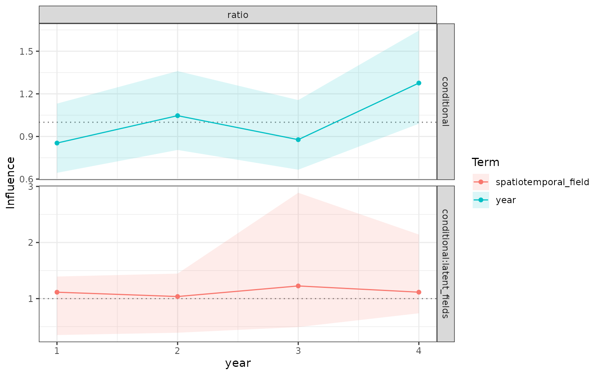
tinyVAST fixed and spatial influence components.
The spatial adapters propagate fixed-effect covariance and simulate spatial and spatiotemporal fields from each model’s sparse joint precision matrix. Each draw is reduced immediately to focus-level influence, so the returned object does not contain an observations-by-draws field array. Delta fields use the same joint draw for occurrence and positive components before the unconditional mean is calculated.
Comparing standardised indices
plot_compare() accepts a list of fitted models from
different backends, or their already-calculated influ_diag
objects. Reusing the diagnostics below avoids repeating model fitting,
posterior sampling, or influence calculations.
These four lobster models use the same response, pot records, and years. They differ in both their model structure and their distribution: the GLM is Poisson, the other models are negative binomial, and their covariate and month-effect specifications differ. This is therefore a sensitivity comparison between the fitted models, not a controlled comparison of fitting software.
lobster_diagnostics <- list(GLM = glm_diagnostic)
if (has_mgcv) lobster_diagnostics$GAM <- gam_diagnostic
if (has_glmmTMB) lobster_diagnostics$glmmTMB <- glmmTMB_diagnostic
if (has_brms) lobster_diagnostics$BRMS <- brms_diagnosticrescale = 1 gives each series a geometric mean of one
over the common 2000–2017 period, making their relative trajectories
directly comparable. Uncertainty ribbons are omitted here to keep
overlapping lines readable.
plot_compare(
lobster_diagnostics,
labels = names(lobster_diagnostics),
rescale = 1,
show_probs = FALSE
) +
labs(x = "Year", y = "Relative standardised CPUE", colour = "Model") +
theme(legend.position = "bottom")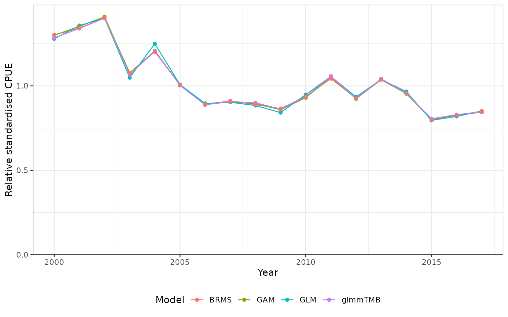
Relative standardised lobster CPUE indices from the available GLM, GAM, glmmTMB, and BRMS examples. Each series has a geometric mean of one over 2000–2017; differences reflect the models’ distributions and structures as well as their estimation methods.
Set show_probs = TRUE to display the intervals already
stored in the diagnostics. For these objects, they are 95% confidence or
credible intervals, depending on the backend. Rescaling multiplies the
estimates and interval bounds by the same display constant; it does not
recalculate uncertainty in the estimated normalising constant or provide
a test of differences between models.
The same function can include sdmTMB and
tinyVAST models when their indices represent the same
response, population, and time period on a compatible scale. Their
demonstrations above use different data, so they are deliberately
excluded here. For other comparisons, also check the reference
distribution, component (for example, unconditional mean versus positive
catch), and shared years before overlaying indices. A common plotting
interface does not by itself make those quantities comparable.
Refitted step plots
A refitted step plot asks how the estimated year effect changes as terms are added to a model. Each changed specification is fitted afresh, re-estimating all its coefficients. The result therefore depends on the order in which terms are added: it describes that sequence of models, rather than allocating an order-independent share of the final result to each term.
For a simple GLM, influ_steps() can construct the
sequence from the fitted formula. It starts with the year term,
preserves any offsets, and then adds the remaining terms in formula
order. This lobster example starts with year, then adds month, the depth
polynomial, and the soak-time polynomial. All steps use the same pot
records and observed reference distribution.
lobster_steps <- influ_steps(
lobster_glm,
year = "year",
refit = TRUE
)
lobster_steps
#> <influ_steps>
#> Estimand: year-effect contrasts (not spatial abundance)
#> Focus: year
#> Steps: 4
#> Refitted: 3
#> step_id label backend status
#> 1 Year only glm refitted
#> 2 Add month glm refitted
#> 3 Add poly(depth, 3) glm refitted
#> 4 Add poly(soak, 3) glm reused originalA step that exactly matches the original model or an earlier step reuses that fit. The printed status records whether each model was refitted or reused; this avoids repeating an identical fit while preserving the model comparison.
plot_step(lobster_steps)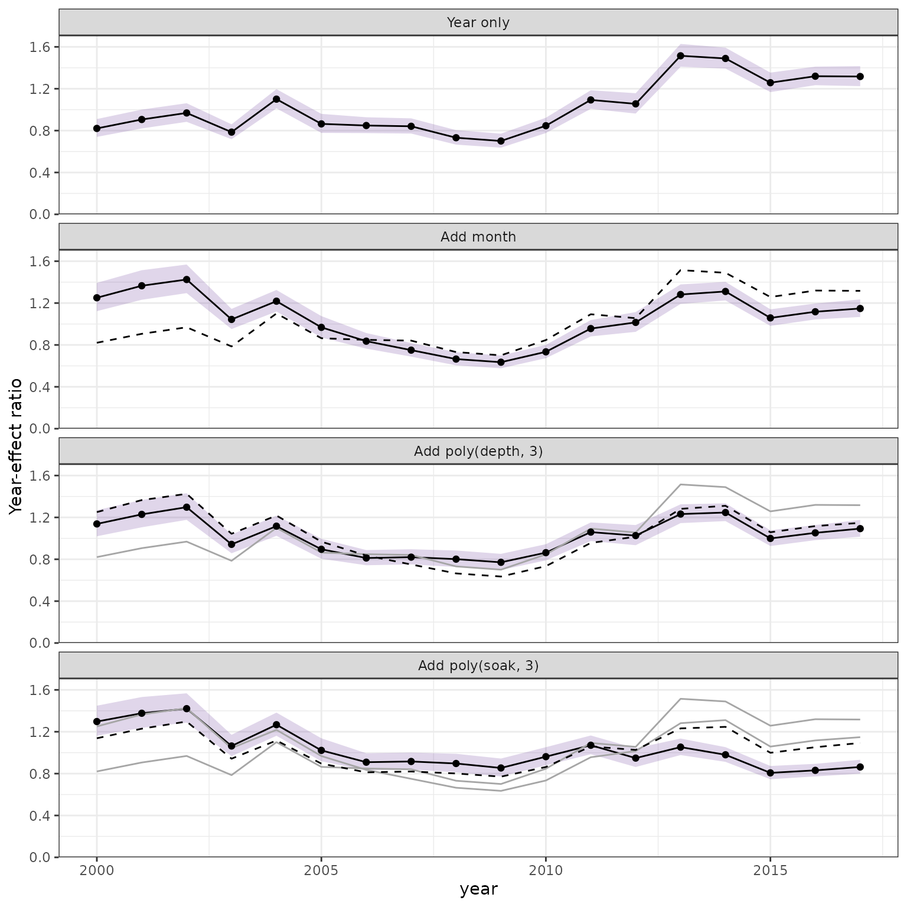
Changes in the relative year effect as month, depth, and soak-time terms are added in a lobster GLM refitting sequence. Each panel highlights the current model with its 95% confidence interval and retains the preceding models for comparison.
The sequence now exposes the changes built into the simulation. Adding month raises the early relative year effects, correcting for sampling in months with lower expected catch. Adding depth corrects the middle-period trough associated with deeper fishing. Adding soak time reduces the false late increase associated with longer soaks. These are changes after refitting all the included terms, so their size also reflects the order of the sequence.
Because the annual effect is known here, we can check the fitted contrasts against it. The code centres the simulated log year effects using the observed number of pot records in each year, matching the step diagnostic’s reference. It applies no additional display rescaling. The table reports root mean squared error (RMSE) across the 18 years on the log scale.
year_truth <- attr(lobsters_per_pot, "simulation")$year_effect
year_counts <- table(lobsters_per_pot$year)
year_truth$centred_log_effect <- year_truth$log_effect - weighted.mean(
year_truth$log_effect,
as.numeric(year_counts[as.character(year_truth$year)])
)
step_indices <- influ_indices(lobster_steps)
truth_check <- do.call(rbind, lapply(lobster_steps$steps$step_id, function(i) {
fitted_years <- step_indices[step_indices$step_id == i, ]
truth_rows <- match(fitted_years$level, as.character(year_truth$year))
data.frame(
step = lobster_steps$steps$label[lobster_steps$steps$step_id == i],
rmse_log = sqrt(mean(
(log(fitted_years$estimate) -
year_truth$centred_log_effect[truth_rows])^2
))
)
}))
knitr::kable(
truth_check,
digits = 3,
col.names = c("Model step", "RMSE of log year effect"),
caption = "Agreement with the known annual effect in this synthetic dataset."
)| Model step | RMSE of log year effect |
|---|---|
| Year only | 0.311 |
| Add month | 0.218 |
| Add poly(depth, 3) | 0.171 |
| Add poly(soak, 3) | 0.086 |
For this fixed simulated dataset, the fitted year contrasts move closer to the known truth as the three covariates are added. This is a teaching check of point estimates, not cross-validated predictive performance or evidence that every added term improves an index in practice. The Poisson confidence bands in the step plot are model-based and are not calibrated for the negative-binomial overdispersion used to generate these catches. The truth check does not evaluate their coverage.
These are centred year-effect contrasts. For the lobster log-link models, they are exponentiated year effects relative to a common reference, not area-weighted abundance indices or spatially integrated predictions. The shaded interval belongs to the current fitted model. It is not an interval for the difference between that model and the preceding one, because the models were fitted to the same observations and their estimates are dependent.
Once calculated, plot(lobster_steps) or
plot_step(lobster_steps) reuses the stored summaries
without fitting again. The shortcut below creates the same kind of plot
directly from a fitted model, but it performs the refits each time it is
called. The automatic main-formula sequence also supports simple GAMs
and glmmTMB models.
plot_step(lobster_glm, year = "year", refit = TRUE)
gam_steps <- influ_steps(lobster_gam, year = "year", refit = TRUE)
plot(gam_steps)Use an explicit named steps list when the order or model
structure needs closer control. Each formula is fitted against the
original model’s settings, so the sequence is visible in the code. A
common reference_data grid and
reference_weights may be passed to
influ_steps() when the observed reference is not the
intended comparison.
lobster_steps <- influ_steps(
lobster_glm,
year = "year",
refit = TRUE,
steps = list(
"Year" = ~year,
"Year + depth" = ~year + poly(depth, 3),
"Year + depth + month" = ~year + poly(depth, 3) + month,
"Year + depth + month + soak" =
~year + poly(depth, 3) + month + poly(soak, 3)
),
reference_data = lobster_reference
)For expensive models, particularly BRMS fits, supply an ordered list
of models that have already been fitted. This calculates and plots their
year contrasts without running MCMC again. The models should use the
same response, observations, focus levels, and reference distribution.
Select the intended component explicitly for models with
several response components. Check the convergence of supplied fits
before including them; their supplied status does not
record a new convergence assessment.
brms_steps <- influ_steps(
list(
"Year" = brms_year_fit,
"Year + month" = brms_month_fit,
"Year + month + depth" = brms_depth_fit,
"Year + month + depth + soak" = brms_soak_fit
),
year = "year",
ndraws = 250
)
plot(brms_steps)Intervals default to 95% when step diagnostics are calculated; set
probs to change their coverage. The default
keep_fits = FALSE keeps the result compact. Set
keep_fits = TRUE only when the fitted intermediate models
are needed afterwards, because retaining those models can substantially
increase the object’s size. The spatial vignette shows explicit
sequences that add spatial and spatiotemporal structure while continuing
to compare the fitted year effects.
One interface and compact uncertainty
All fitted-model methods return an influ_diag:
methods("influ")
#> [1] influ.brmsfit* influ.default* influ.gam* influ.glm*
#> [5] influ.glmmTMB* influ.sdmTMB* influ.tinyVAST*
#> see '?methods' for accessing help and source codeThe result contains compact tables for influence, coefficient or field summaries, data composition, and index comparisons:
head(influ_effects(glm_diagnostic))
#> focus level term component scale estimate std_error lower
#> 1 year 2000 year conditional link 0.26025542 0.05632333 0.14986373
#> 2 year 2001 year conditional link 0.31968907 0.05442756 0.21301301
#> 3 year 2002 year conditional link 0.35088853 0.05020332 0.25249183
#> 4 year 2003 year conditional link 0.06192851 0.04888310 -0.03388060
#> 5 year 2004 year conditional link 0.23677462 0.04454537 0.14946731
#> 6 year 2005 year conditional link 0.02161548 0.05467925 -0.08555389
#> upper method
#> 1 0.3706471 analytic covariance
#> 2 0.4263651 analytic covariance
#> 3 0.4492852 analytic covariance
#> 4 0.1577376 analytic covariance
#> 5 0.3240819 analytic covariance
#> 6 0.1287849 analytic covariance
head(influ_composition(glm_diagnostic))
#> focus level term term_level n weight effect proportion component
#> 1 year 2000 year 2000 229 229 0.00000000 1 conditional
#> 2 year 2001 year 2001 227 227 0.05943365 1 conditional
#> 3 year 2002 year 2002 249 249 0.09063311 1 conditional
#> 4 year 2003 year 2003 307 307 -0.19832691 1 conditional
#> 5 year 2004 year 2004 266 266 -0.02348080 1 conditional
#> 6 year 2005 year 2005 213 213 -0.23863994 1 conditional
influ_indices(glm_diagnostic)
#> focus level series estimate std_error lower upper scale
#> 1 year 2000 nominal 1.4803493 0.11046880 1.2638345 1.6968642 response
#> 2 year 2001 nominal 1.6343612 0.12755150 1.3843649 1.8843576 response
#> 3 year 2002 nominal 1.7469880 0.13605329 1.4803284 2.0136475 response
#> 4 year 2003 nominal 1.4169381 0.09985150 1.2212328 1.6126434 response
#> 5 year 2004 nominal 1.9849624 0.15187577 1.6872914 2.2826334 response
#> 6 year 2005 nominal 1.5586854 0.13659395 1.2909662 1.8264047 response
#> 7 year 2006 nominal 1.5304054 0.11867176 1.2978130 1.7629978 response
#> 8 year 2007 nominal 1.5173502 0.10253518 1.3163849 1.7183154 response
#> 9 year 2008 nominal 1.3201320 0.09906052 1.1259770 1.5142871 response
#> 10 year 2009 nominal 1.2638436 0.09420120 1.0792127 1.4484746 response
#> 11 year 2010 nominal 1.5269841 0.11822674 1.2952640 1.7587043 response
#> 12 year 2011 nominal 1.9715302 0.14321514 1.6908337 2.2522268 response
#> 13 year 2012 nominal 1.9039301 0.14955989 1.6107981 2.1970621 response
#> 14 year 2013 nominal 2.7320755 0.18020926 2.3788718 3.0852791 response
#> 15 year 2014 nominal 2.6860841 0.16650531 2.3597397 3.0124285 response
#> 16 year 2015 nominal 2.2684564 0.14807205 1.9782405 2.5586723 response
#> 17 year 2016 nominal 2.3801170 0.13585946 2.1138373 2.6463966 response
#> 18 year 2017 nominal 2.3750000 0.15535100 2.0705176 2.6794824 response
#> 19 year 2000 standardised 1.2972614 0.07321457 1.1616759 1.4486718 ratio
#> 20 year 2001 standardised 1.3766996 0.07507260 1.2374008 1.5316799 ratio
#> 21 year 2002 standardised 1.4203290 0.07142035 1.2872290 1.5671916 ratio
#> 22 year 2003 standardised 1.0638863 0.05208566 0.9666869 1.1708590 ratio
#> 23 year 2004 standardised 1.2671555 0.05651764 1.1612155 1.3827606 ratio
#> 24 year 2005 standardised 1.0218508 0.05598106 0.9180037 1.1374454 ratio
#> 25 year 2006 standardised 0.9090193 0.04181697 0.8307469 0.9946664 ratio
#> 26 year 2007 standardised 0.9158739 0.04154178 0.8380655 1.0009063 ratio
#> 27 year 2008 standardised 0.8965231 0.04513042 0.8124222 0.9893301 ratio
#> 28 year 2009 standardised 0.8538263 0.04372493 0.7724171 0.9438157 ratio
#> 29 year 2010 standardised 0.9617778 0.04421246 0.8790188 1.0523285 ratio
#> 30 year 2011 standardised 1.0709101 0.04567821 0.9851182 1.1641735 ratio
#> 31 year 2012 standardised 0.9481975 0.04563182 0.8629695 1.0418429 ratio
#> 32 year 2013 standardised 1.0530734 0.04026025 0.9771170 1.1349343 ratio
#> 33 year 2014 standardised 0.9798923 0.03585484 0.9121348 1.0526832 ratio
#> 34 year 2015 standardised 0.8071257 0.03230505 0.7462887 0.8729221 ratio
#> 35 year 2016 standardised 0.8310860 0.03062793 0.7732215 0.8932808 ratio
#> 36 year 2017 standardised 0.8632611 0.03393965 0.7992997 0.9323407 ratio
#> component
#> 1 conditional
#> 2 conditional
#> 3 conditional
#> 4 conditional
#> 5 conditional
#> 6 conditional
#> 7 conditional
#> 8 conditional
#> 9 conditional
#> 10 conditional
#> 11 conditional
#> 12 conditional
#> 13 conditional
#> 14 conditional
#> 15 conditional
#> 16 conditional
#> 17 conditional
#> 18 conditional
#> 19 conditional
#> 20 conditional
#> 21 conditional
#> 22 conditional
#> 23 conditional
#> 24 conditional
#> 25 conditional
#> 26 conditional
#> 27 conditional
#> 28 conditional
#> 29 conditional
#> 30 conditional
#> 31 conditional
#> 32 conditional
#> 33 conditional
#> 34 conditional
#> 35 conditional
#> 36 conditional
influ_metrics(glm_diagnostic)
#> term component metric estimate std_error lower upper
#> 1 year conditional overall 0.147765774 NA NA NA
#> 2 year conditional trend -0.024481968 NA NA NA
#> 3 month conditional overall 0.200153750 NA NA NA
#> 4 month conditional trend 0.037814471 NA NA NA
#> 5 poly(depth, 3) conditional overall 0.116432819 NA NA NA
#> 6 poly(depth, 3) conditional trend -0.004176475 NA NA NA
#> 7 poly(soak, 3) conditional overall 0.140917166 NA NA NA
#> 8 poly(soak, 3) conditional trend 0.024185229 NA NA NA
#> method
#> 1 analytic covariance
#> 2 analytic covariance
#> 3 analytic covariance
#> 4 analytic covariance
#> 5 analytic covariance
#> 6 analytic covariance
#> 7 analytic covariance
#> 8 analytic covarianceCalculation and retention are separate choices:
# Calculate uncertainty, retaining summaries only.
d1 <- influ(fitted_model, focus = "year", retain = "summary")
# Retain exact draws only for the derived diagnostics.
d2 <- influ(fitted_model, focus = "year", retain = "derived_draws")
# Write compact diagnostic draws to disk.
d3 <- influ(
fitted_model,
focus = "year",
retain = "disk",
draws_path = "influence-draws.rds"
)
# Fast preview from coefficient estimates or posterior means.
d4 <- influ(fitted_model, focus = "year", uncertainty = "none")For GLMs and GAMs, linear diagnostic contrasts use fitted joint
covariance analytically. Joint coefficient simulation is used when
derived draws are requested. The BRMS backend reduces joint posterior
draws during calculation, glmmTMB jointly simulates fixed
components for hurdle and zero-inflated means, and the spatial backends
reduce sparse joint-precision draws to the same compact schema. This
separation draws on the posterior-processing approach used in CPUETools
(Dragonfly Science,
n.d.), while the S3 design and GAM implementation were also
informed by gamInflu (Dunn 2025).
Families and response structures
The initial family set is:
influ_families()
#> family aliases default_scale
#> 1 gaussian normal difference
#> 2 binomial bernoulli difference
#> 3 poisson poisson ratio
#> 4 negative_binomial negbinomial, nbinom1, nbinom2 ratio
#> 5 lognormal lognormal ratio
#> 6 gamma Gamma ratio
#> 7 tweedie Tweedie ratioIt covers Gaussian, binomial, Poisson, negative binomial, lognormal, Gamma, and Tweedie responses. Hurdle/delta combinations cover Gamma, lognormal, Poisson, and negative-binomial positive components. Zero-inflated combinations cover Poisson and negative-binomial counts. Quasi families and more specialised positive distributions are deliberately outside the initial scope.
The separate hurdle and zero-inflation
vignette explains named components and unconditional means. The Bentley validation vignette runs the
frozen original proto implementation, compares values, and
displays old and new plots side by side. The spatial and spatiotemporal
vignette maps persistent and time-varying fields alongside their
influence components.